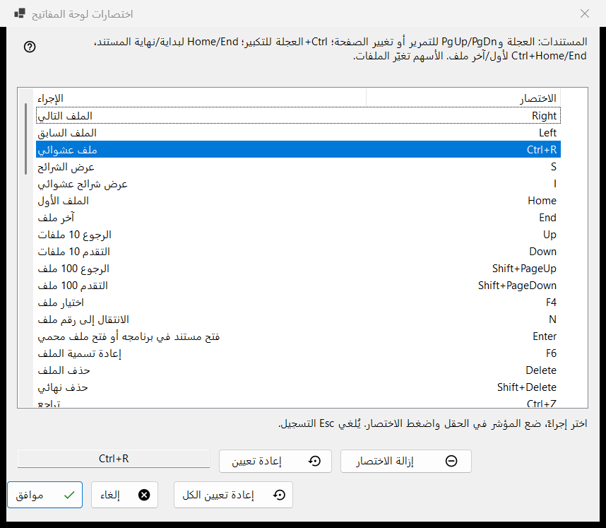
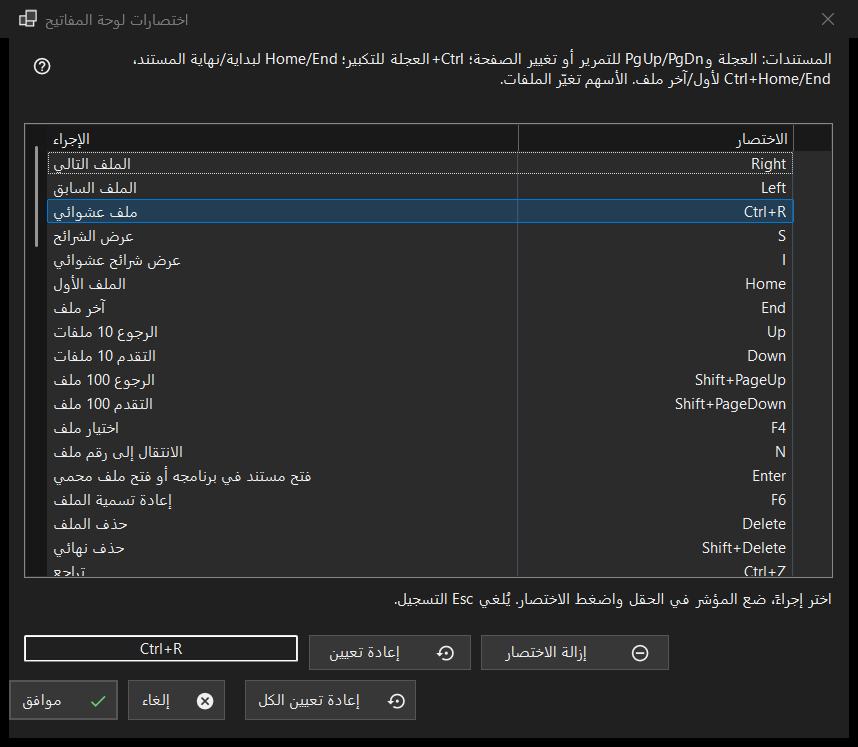

اختصارات لوحة المفاتيح
الغرض من هذه النافذة
قائمة بكل إجراء في العارض يمكن تغيير مفتاحه، مع الاختصار الذي يستجيب له حاليًا. تُفتح من الإعدادات، صفحة الملفات والنظام، بالزر إعداد.. في صف اختصارات لوحة المفاتيح. تعدّل النافذة نسخة عمل: لا يصل أي شيء إلى ملفك الشخصي حتى تضغط موافق.


بهذا الترتيب
- افتح الإعدادات، وانتقل إلى الملفات والنظام، واضغط إعداد.. في صف اختصارات لوحة المفاتيح.
- حدّد إجراءً في القائمة.
- انقر على الحقل الموجود أسفل القائمة واضغط الاختصار الجديد.
- إذا كان إجراء آخر يملكه بالفعل، فاختر تبديل الاختصارات أو إزالته من ذلك الإجراء أو إلغاء.
- كرّر ذلك مع إجراءات أخرى؛ واستخدم إعادة تعيين أو إزالة الاختصار أو إعادة تعيين الكل عند الحاجة.
- اضغط موافق للاحتفاظ بالتغييرات، أو إلغاء لتجاهلها كلها.
عناصر النافذة
قائمة الإجراء والاختصار
يمثل كل صف إجراءً واحدًا واختصاره الرئيسي؛ والإجراء الذي لا مفتاح له يظهر فيه غير معيَّن. تظهر خانات المجلدات العشر باسم النقل إلى المجلد 1..0 والنسخ إلى المجلد 1..0 (مفاتيح الأرقام تنقل، وShift مع رقم من الصف العلوي ينسخ). تستجيب بعض الإجراءات أيضًا لمفاتيح إضافية أصلية (الملف التالي يستجيب أيضًا لـ Space وPageDown). تعرض القائمة المفتاح الرئيسي فقط، ولكن بمجرد أن تعطي الإجراء اختصارًا جديدًا تتوقف جميع مفاتيحه الأصلية القديمة عن العمل. يذكر النص الموجود فوق القائمة مفاتيح ثابتة للمستندات (العجلة وPgUp/PgDn وHome/End والأسهم) ليست ضمن القائمة. يفتح الإجراء العمليات المجدولة نافذة العمليات المجدولة في Share Manager؛ وليس له مفتاح افتراضيًا - عيّن له مفتاحًا لفتح النافذة من لوحة المفاتيح.
تسجيل اختصار
حدّد صفًا، ثم انقر على الحقل الموجود أسفل القائمة (أو انقر نقرًا مزدوجًا على الصف) واضغط المفاتيح، مع Ctrl أو Shift أو Alt إن شئت. يسجّل الحقل الاختصار كاملًا دفعة واحدة، ولا يُعدّ مفتاح التعديل وحده اختصارًا. يخرج Esc من الحقل دون تسجيل أي شيء. يظهر التغيير في القائمة فورًا، لكنه لا يزال في نسخة العمل فقط.
المفاتيح التي لا يمكن تعيينها
المفاتيح F1 وF10 وF11 وEsc ومفاتيح Windows ومفتاح القائمة وAlt+Tab وAlt+F4 وCtrl+Alt+Delete تخص Windows أو البرنامج. وعند الضغط على أحدها تظهر الرسالة: هذا الاختصار محجوز للنظام أو للبرنامج ولا يمكن تعيينه. ولا يتغير شيء.
اختصار مأخوذ بالفعل
يذكر السؤال المالك: الاختصار X معيَّن بالفعل للإجراء الآخر. يعطي تبديل الاختصارات ذلك الإجراء الاختصار الذي كان للإجراء الحالي (وقد لا يكون له أي اختصار). أما إزالته من ذلك الإجراء فيتركه غير معيَّن ويعطيك الاختصار. ولا يغيّر إلغاء أي شيء.
إعادة تعيين، وإزالة الاختصار، وإعادة تعيين الكل
تعيد إعادة تعيين الإجراء المحدد إلى مفتاحه الأصلي. وتترك إزالة الاختصار الإجراء بلا أي مفتاح، فيتوقف مفتاحه الأصلي عن العمل أيضًا؛ استخدمها لتعطيل مفتاح. أما إعادة تعيين الكل فتسأل: إعادة كل الاختصارات إلى قيمها الافتراضية؟ يمسح إعادة إلى الافتراضي كل تغييراتك في النافذة؛ ويبقيها إلغاء.
موافق وإلغاء
يحفظ موافق الخريطة كاملة في الملف الشخصي ويستخدمها العارض فورًا. ويغلق إلغاء النافذة ويترك الملف الشخصي كما كان تمامًا. أما مفاتيح الفيديو والصوت (الإيقاف المؤقت وكتم الصوت ومستوى الصوت والتنقل داخل المقطع والسرعة والتقدم إطارًا بإطار والمسارات) فتعمل على الوسائط التي يجري تشغيلها.